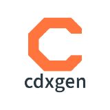
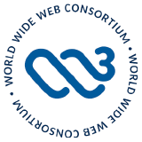
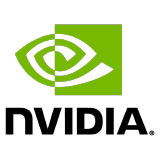
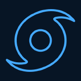
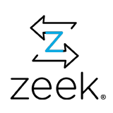
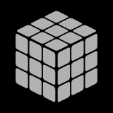
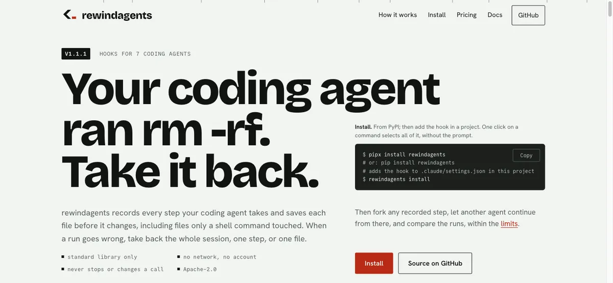
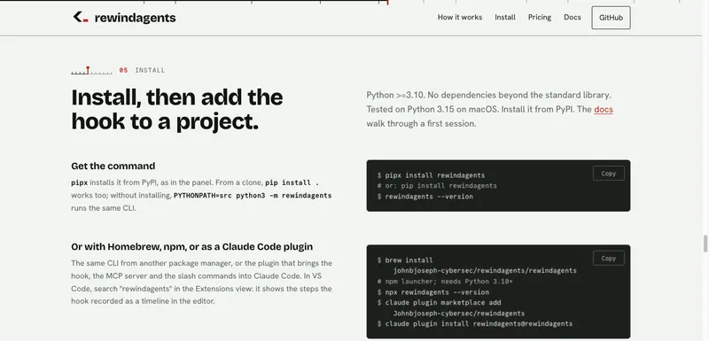

01
AI agents that act
The agent reads the mailbox, so it gets mail access. Then it needs tickets, the CRM, the finance export. Each grant makes sense on its own. I build the layer that checks every action before it runs.
Co-founder & CPTO / Purplecop Security
I build both halves: AI security that decides what an agent is allowed to do before it does it, and the compliance software that proves your controls actually work.
~/storyMy story
I don't think about compliance as a control library. I think about it as something people have to actually do on a Tuesday. That comes from where I started.
About ten years in HR and technical recruitment, building teams across India, Canada and the US. Structured processes, audits, documentation and leadership expectations, every single week.
One goal: real capability through daily practice. Within months I had finished Jr Penetration Tester and SOC Level 1 on TryHackMe and reached the top 1% of more than four million learners.
The value shows up when security becomes governance: measurable, auditable, tied to a business decision. So I went all in on GRC and AI governance and qualified as Lead Auditor for ISO 27001, 42001 and 27701.
GRC practice was either expensive, locked inside enterprise tools, or pure theory. So I built the GRC Practice Lab. Today more than 12,000 people in 34 countries use it.
It stays free and I still lead it. As Co-founder and CPTO, I now lead product and technology at Purplecop Security, building the software compliance teams run on.
AI agents now act on real systems, so I build AI security too: every action an agent takes is checked before it runs, and leaves a record an auditor can follow. And I work in the open on the standards that will govern it.
~/bioIn brief
I'm John Bommeraveni Joseph (John B Joseph). I work across cybersecurity, GRC, AI security and post-quantum cryptography.
As Co-founder and Chief Product and Technology Officer of Purplecop Security, I lead product and technology for the compliance software enterprises use to prove their controls work. I also build AI security that decides what an autonomous agent may do before it acts.
I built the GRC Practice Lab, which has 12,000+ active users across 34 countries, and Purplecop Security acquired it in August 2026. I help shape the international standards that will govern AI and cryptography, with contributions merged or accepted at OWASP, W3C, CycloneDX, the UK AI Security Institute, Google, Microsoft, IBM, NVIDIA, Cisco and Tencent. In 2026 I was named to the University of Texas at Austin Security Hall of Fame for a responsible disclosure.
More than 32,000 people follow my work on LinkedIn, where I publish GRC Made Simple Daily. I also lead the Dubai chapter of the GRC Engineering Club. I bring a decade of international experience in HR and technical recruitment across India, Canada and the United States, hold Lead Auditor credentials for ISO/IEC 27001, 42001 and 27701, and maintain rewindagents, open-source undo for AI coding agents.
~/workWhat I'm working on
Each one ends in the same question I ask about every control: what proves it's working?
The agent reads the mailbox, so it gets mail access. Then it needs tickets, the CRM, the finance export. Each grant makes sense on its own. I build the layer that checks every action before it runs.
ISO 42001 and the EU AI Act only matter if someone can operate them on a Tuesday and hand an auditor a record. I turn obligations into controls, owners and evidence.
Before it's a maths problem, it's an inventory problem. Know where your cryptography lives, then plan the move. That's a programme a board can follow.
~/crosswalkHow I build
That's the whole argument for crosswalking, and it's easier to show than to explain.
Most teams answer every framework on its own and collect the same screenshot nine times. Write the control once, evidence it once, and map it to everything it satisfies. Your auditor samples one record. You stop running nine audits in parallel.
~/open-sourceIn the open
My contributions to the open standards for AI agents and post-quantum readiness. Every line links to the public thread, so you can read the work yourself.
Status is taken from each public thread
Every pull request merged, every fix accepted, each hall of fame, and the badges GitHub has awarded. Each tile shows the organisation's own logo; open one to read every item and follow it to the public record.
1 recognised
4 merged
2 merged
1 merged · 1 issue accepted
2 merged

OWASP cdxgengithub.com/cdxgen2 issues accepted
1 merged · 1 issue accepted
1 merged

World Wide Web Consortiumgithub.com/w3c1 merged
1 merged
1 merged

NVIDIA Corporationgithub.com/NVIDIA1 merged

CycloneDX BOM Standardgithub.com/CycloneDX1 merged
1 merged
1 merged
1 merged
1 merged

Zeek Network Monitoring Projectgithub.com/zeek1 merged
1 merged
1 issue accepted
1 merged

SBOM-Toolsgithub.com/sbom-tool1 merged
Every tile opens to show each item and links to its public thread; badges are read from GitHub's achievements page. Logos are each organisation's own. Updated 2026-11-25.
Standards bodies, scanners, compliance tooling and skills libraries. Every row in the ledger links to the thread.
124 contributions across 90 projects · 36 contributions accepted. Showing 8 of 90 projects. Status is taken from each public thread.
~/builtBuilt in the open
My own projects, with their numbers as they are: release and commit dates are read from GitHub every two hours, zero included. Crosswalks, an OSCAL overlay, free templates and the tool that tracks my own AI work. All public, all free to use.


Undo for AI coding agents, including rm -rf: record every step, then take back one step, one file or a whole session.
GitHub API, Johnbjoseph-cybersec/rewindagents · as of 2026-11-19 12:50 IST
made by John B Joseph
India's RBI FREE-AI, the DPDP Act and Rules, and CERT-In mapped to ISO/IEC 42001, NIST AI RMF, the EU AI Act and FINOS. Every quote is checked against the primary text.
India's CEA Cyber Security in Power Sector Regulations, 2026 mapped to NIST CSF 2.0, the NIST SP 800-82r3 OT overlay and NERC CIP. Every quote is checked against the Gazette text.
An unofficial machine-readable rendering of the OT overlay in the NIST SP 800-82r4 draft: LOW, MODERATE and HIGH profiles over SP 800-53r5, validated with oscal-cli.
Open the "Start here" tab first. Each workbook references the standards by clause number and title only. CC BY 4.0.
MindLedger reads Claude Code session logs, keeps an append-only token ledger that never goes backwards, and backs up the agent's memory, settings and skills every two hours. These are my own numbers, from the private build it was open-sourced from, refreshed every two hours.
My token ledger, synced every 2 hours · as of 2026-11-25 10:03 IST
~/newsletterNewsletter · GRC Made Simple Daily
That's how every edition of GRC Made Simple Daily starts. Everything that happened in GRC, AI governance, AI security, privacy and post-quantum today, in one place. Readable in five minutes, with one story explained properly and one thing you can steal for your own programme.
~/youtubeGRC Made Simple on YouTube
Frameworks explained like a trainer would, AI risk without the hype, and honest conversations with practitioners. See the channel.
 01
01 02
02 03
03 04
04 05
05 06
06Ranked by views among the channel's 15 newest uploads · YouTube channel feed, views as YouTube reports them · as of 2026-11-25 13:17 IST
~/labGRC Practice Lab · free with an account
It's the thing I needed when I was starting out: a full GRC workspace with real controls, real registers and real audits, where mistakes cost nothing.
11 guided scenarios, 12 portfolio projects and a full ISO 27001 Lead Implementer course. If you're trying to break into GRC and can't get past the experience paradox, the door is open.
Open the GRC LabGoogle Analytics · Nov 2026
they log in from
Google Analytics · Oct 2026
9 frameworks · GRC Practice Lab
Each mission checks your own registers, not a quiz
Build the risk register, the Statement of Applicability and the vendor assessments yourself, then export them as proof.
ISO 27001 Lead Implementer
The full course, inside the lab. Clause by clause, with the audit stories that go wrong.
Every number below went out on LinkedIn the day it happened, with the video or post the community saw first. Dates are the post dates. Follow the journey.
You found bugs. You found mapping issues. And many of you took the time to explain what was wrong. We listened.
See the postIt was just me, a laptop, and one idea: GRC is hard to learn from slides. People need a place to practise, make mistakes, and learn by doing.
See the postEvery one of those interactions is someone working through a control, a risk or a piece of evidence instead of reading another PDF about it.
See the postThe journey · 17 posts from launch to 12,000+
Amber dots are the video milestones.
This is what I was missing when I started in my career. I had to learn from the ground up. This right here is what creates leverage for young professionals.
7,000 active users on something that's still free says a lot about the real value it's providing. Tackling cross-framework mapping inside something interactive and free, at this scale, is no small feat.
Love seeing tools that actually simulate real GRC workflows vs just framework theory. Really solid work!
This webapp helping me more understand CISO point of view. The dashboard is just right for high level view. Thank you for make it free for all people who want to switch to GRC career.
For a newbie trying to enter into the GRC professional space, it is super helpful. The practicality makes it easier to learn.
Hands-on GRC lab is a great initiative for starters and experienced folks to brush up on the basics, specially for ISO 27001. These numbers are just the beginning.
~/speakingSpeaking
Virtual keynotes, panels and podcasts. I talk about what to control, what evidence to keep and what changes this year, in plain words your team can act on the next morning.
Talks
Credentials